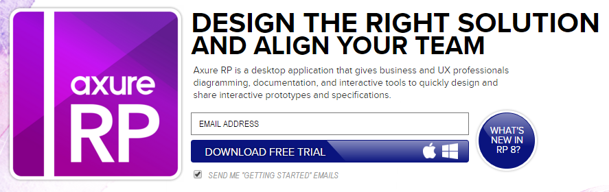

总有产品经理初学者问我axure的问题。关于软件本身的问题，一律回答，不会。这是真的。我没有专门学过axure，更谈不上会用。干了快五年多的产品工作，一只手数的过来的使用axure的次数，都是拿来就用，画画简单的线框图，甚至连需要google的问题都没有遇到过。
但自从我第一次了解axure，我就非常清楚axure是一款怎样的软件，以及它不是怎样的软件。
axure官方网站是这么定义的：

Axure RP is a desktop application that gives business and UX professionals diagramming, documentation, and interactive tools to quickly design and share interactive prototypes and specifications.
翻译过来意思是：
axure rp 是一款给商业人事和用户体验从业者用的图形、文档、交互设计工具，用于快速设计和分享交互原型和说明。
这个定义非常明确的说明，axure是一款用来做交互设计的工具，而不是纯粹的“原型工具”。相对产品经理，axure更适合给交互设计师使用。当然，在很多公司是没有专门的交互设计师的，产品经理兼任交互就另当别论。
相较而言，产品经理关注的是产品宏观的全生命周期的信息，而交互设计师更关注具体的用户操作体验。产品经理在画原型的时候更多的是考虑这个功能（特性、界面……）提供给谁使用，能给用户带来怎样的价值，能为产品或企业带来什么利益。而交互设计师在画原型的时候更多更多的思考界面、控件怎样设计才能让用户感觉更加舒适，使用起来更加流畅。
如果产品经理混淆了自己的角色，对微观细节给予过多的关注，往往会影响他的主业，忽略对产品原则、目标、计划、价值等问题的考量，会造成整个产品在构思或研发过程中的偏离。
在产品的早期探索阶段，产品经理的作用是对产品进行功能构思和逻辑论证，要求敏捷测试，快速调整，用低保真的线框图更适应这种节奏。在产品的研发阶段，产品经理画图主要是为了描述需求，而需求的描述则不完全依靠原型，还包括用户故事、验收标准、测试用例等文本内容，以及思维导图、流程图等形式。描述需求的目标是让设计师和研发人员明白产品意图，而不是让他们照猫画虎，毕竟视觉方面，设计师理应比产品经理专业的多。否则当你费时费力用axure做了高保真，线条、颜色、字体、交互都面面俱到到几乎规定好了，你让真正负责UX的UI/UE干什么呢？
因此我建议低年级产品经理在使用axure时，要提醒自己做原型的目的，注意节制，谨防落入为设计而设计的陷阱，本末倒置。其实如果没有要求必须用axure，我倒是更提倡使用balsamiq之类的mockups工具。如果真的需要高保真原型，比如给客户、老板看的，与其用axure做，不如直接请技术用前端框架（比如bootstrap，其实不难，产品也应该很容易掌握）搭一个，那才是真正过的高保真原型。
评论